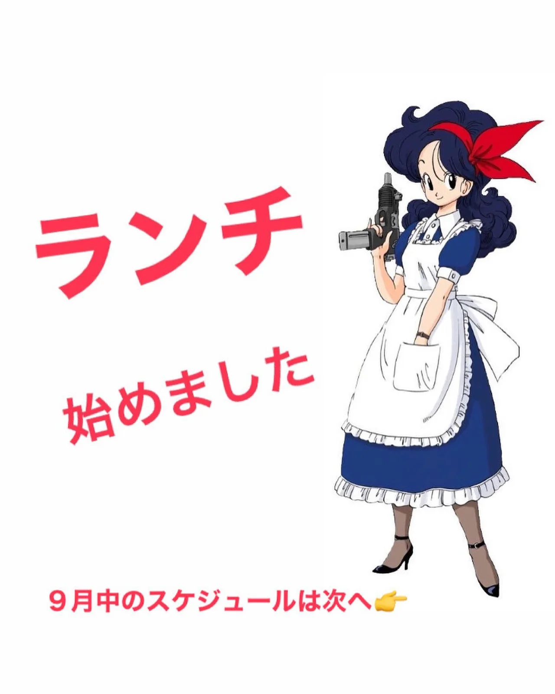
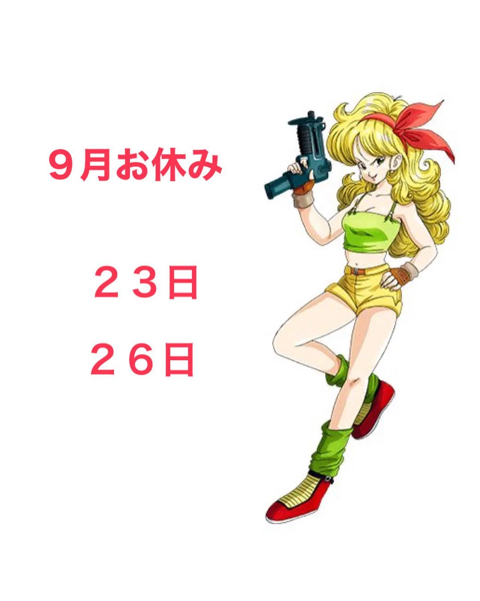
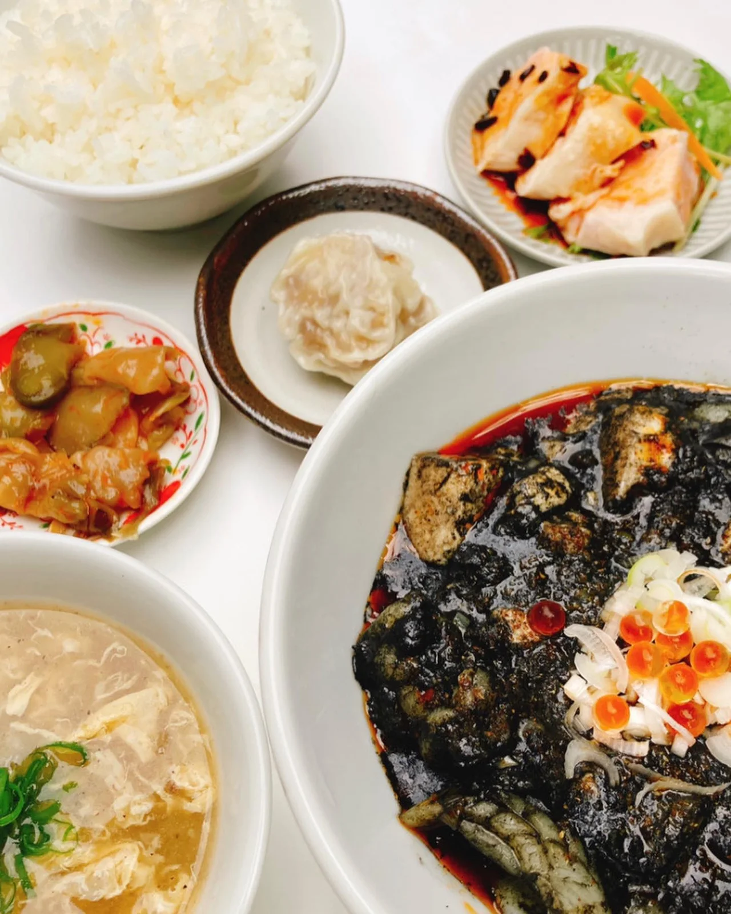

2021年9月20日
まさか有馬がランチをやるとは！？



まさか有馬がランチをやるとは！？ 色々とやってみるものですね！ ランチもおもろ！！！ ９月のスケジュールですが、 ２３日と２６日はお休みをいただきましてそれ以外は、 11:30〜14:30（LO） とさせていただきます！ 今のところは、 ●海鮮ブラック麻婆定食 1,000 ●海老まみれチャーハン 900 の２品ですが、 色々とメニューも変えていこうと思いますので、ぜひともお越しください！！ #中華バル#中華#中華料理#福島区グルメ#路地裏#B級グルメ#中国#チャイニーズ#路地裏チャイニーズ有馬#有馬#シュウマイ#餃子#点心#フォローミー#followme#パクチー#麻婆豆腐#ドラゴンボールランチ#ランチ